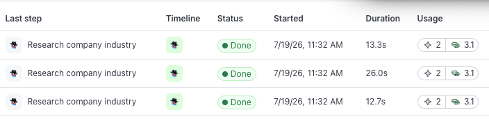
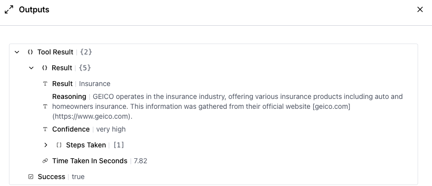

What this gets you
You already check sources. You look at who wrote the review before you trust the star rating. You click through to the article before you repeat the headline. It takes a few seconds, and it is the difference between knowing something and having heard it.
Your workflow is the same situation. The answer arrives short and clean: an industry, plus a rating where the researcher says it is "very high" confidence. It reads like something settled. You cannot tell a wrong answer from a right one by looking at it.
What you have here that a bare answer never gives you is the trail. Clay's AI web researcher keeps the page it visited and the text it read on the way there, and you can open that. This lesson is that habit.
You already built the workflow in Lesson 3, so pointing it at a second and third company is just running it again. Each company gets its own run, and Clay keeps a row for each.
What one answer is actually made of
Three companies, one run each: geico.com, zurichna.com, resourcepro.com. Those are the three I ran, and all three came back Insurance.
Each run lands as its own row in the workflow's Runs tab, which you see when you open Clay in your browser: status Done, how long it took, and what it cost. Three finished, none failed.

Open one of those runs. For geico.com, the researcher returned four things:
- The answer. "Insurance."
- How sure it says it is. "Very high."
- Its reasoning, in its own words. "GEICO operates in the insurance industry, offering various insurance products including auto and homeowners insurance. This information was gathered from their official website geico.com."
- The steps it took. This one holds the actual page it visited, https://www.geico.com, the links it found there, and the text it read off the page.

The first three are the researcher talking about itself. Only the fourth is evidence you can look at with your own eyes.
And about those three matching answers. It is tempting to read three agreeing results as three confirmations. It is one researcher using one method, three times. If the method is off, it is off on all three, and they will still agree with each other.
Which is why you do not check all of them. You check the one a decision hangs on.
Try it
You have the Company Research workflow from Lesson 3. Run it twice more, then look inside one answer.
- Open Claude Code. Use geico.com and zurichna.com — those are the two I ran, so you have something to compare against. Two companies off your own Lesson 2 list work just as well; your list will not look like mine, and nothing in this lesson depends on it matching.
- Ask for the runs:
Run Company Research on the first company. Then run it again on the second. Show me both answers.
A run costs about three data credits and two actions, and each one lands as its own row instead of replacing the last. If one does come back failed, ask for it again.
- Open the workflow in Clay and click the Runs tab. Your runs are stacking up, one row each. That list is your record, and it stays there.
Now pick one of the two runs you just made and go at the answer:
Show me the reasoning and the sources behind that answer, including the actual page it visited.
What comes back has parts that are not worth the same:
| What it showed you | What to do with it |
|---|---|
| The answer, and the confidence rating next to it | Note it and move on. The researcher is grading its own work. |
| The reasoning, written out | Read it, and remember it is still the researcher describing itself. |
| The page it visited and the text it read there | Open this one. Ask whether that page says the thing. |
You are done when you can say it out loud: the page behind this answer says the thing. Not whether the reasoning is well written. That.
Watch for the answer that cannot point you to anything. If the researcher has no page to show you, that answer is not necessarily wrong. It is unchecked, which is a different thing. Treat it as unproven until you can see a page behind it.
One thing you may have noticed while you were doing this. Whichever companies you used, the question was still mine — what industry a company is in was probably never what you actually wanted to know. Lesson 5 swaps it.
Check yourself
Three questions. Nothing is recorded, and a wrong pick just explains why.
Fine print
The exact steps, dates, and limits
- Everything above comes from three live runs on a real Clay account, July 19, 2026: geico.com, zurichna.com and resourcepro.com, each through the same two-step workflow. All three completed, all three returned "Insurance" with confidence "very high."
- Each of those three runs used 3.1 data credits plus 2 actions — the five-or-so credits a run cost you in Lesson 3. That per-run cost held on every one of the nineteen runs behind this course. The timing did not: across those nineteen runs the fastest finished in fourteen seconds and the slowest took thirty-four, averaging about twenty-two. Do not read a slow run as a stuck one. Note that this is the run's own clock, which is not the same as the researcher's "time taken" figure above — that one counts only its own working time and is always the smaller number.
- On the geico.com run, the researcher reported its own working time as 7.82 seconds. That is its own count of its working time, not how long the run took. Its recorded steps contained the visited URL https://www.geico.com along with the links found on that page and the page text it read. That record is what makes the source checkable rather than a claim about a source.
- Running things this way does not cost extra. Clay charges the same credits and actions as the equivalent work done inside Clay's own interface (Clay docs: clay-api-cli, checked Jul 18, 2026).
- Clay's Agent Plugin is in open beta, and the workflow part is newer and rougher than the rest of it, so an occasional run failing or stalling is normal rather than a sign you built it wrong (Clay docs: clay-api-cli, checked Jul 18, 2026). Re-running is the fix.